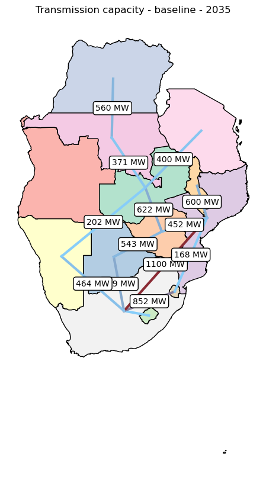
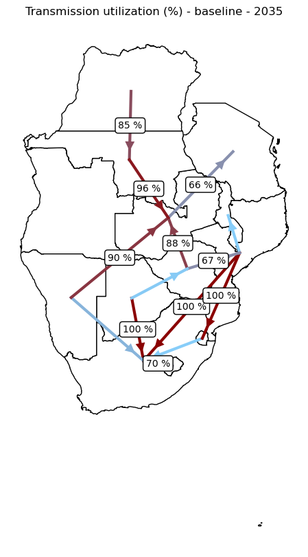
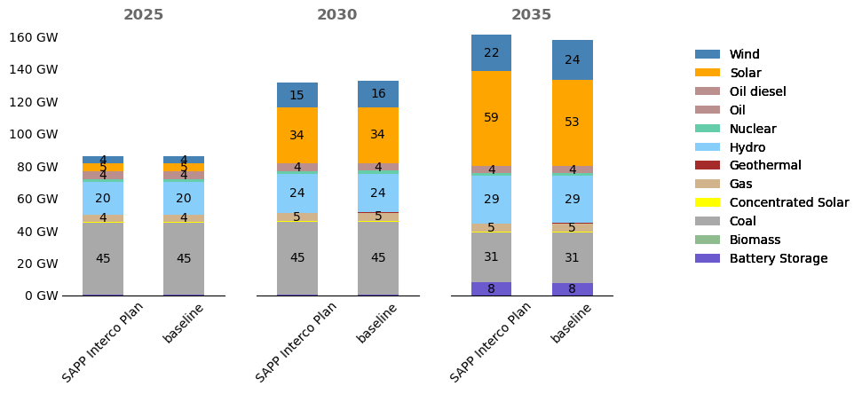
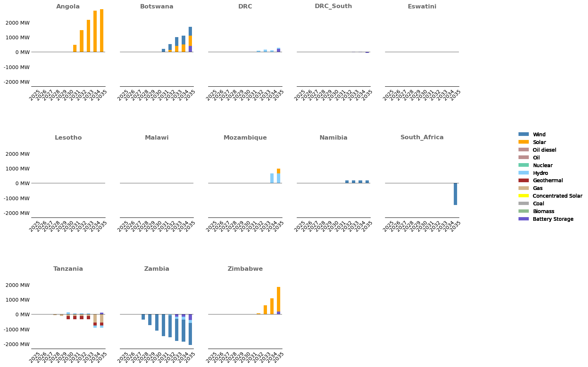
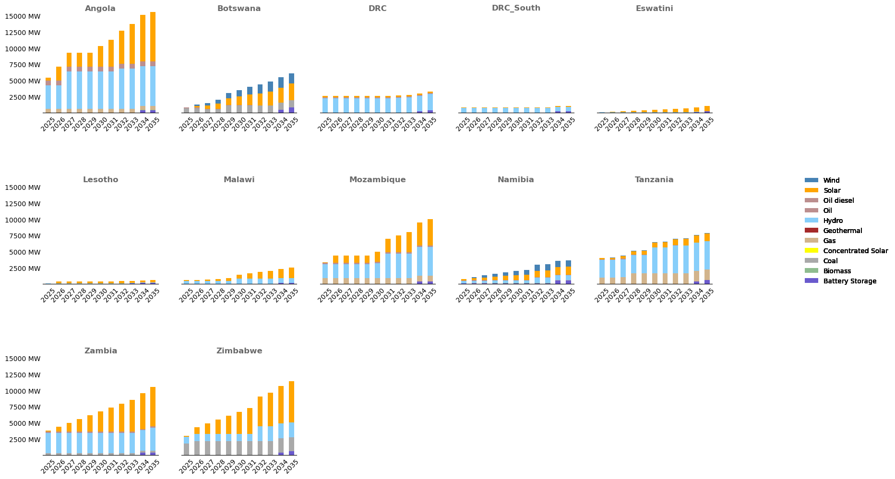
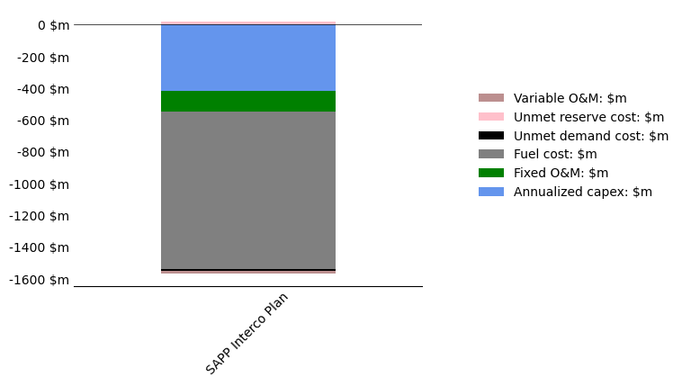
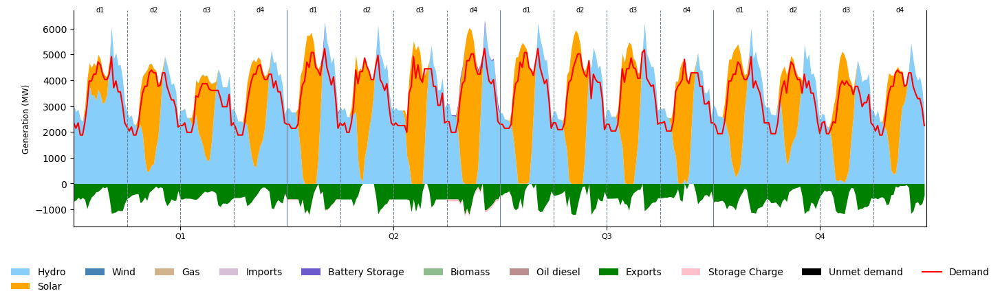

from fileinput import filename
from utils import *
Load data#
This loads results data from the results folder
RESULTS_FOLDER = 'simulations_run_20250411_122833'
# RESULTS_FOLDER = os.path.join('..', 'output', RESULTS_FOLDER)
RESULTS_FOLDER = os.path.join(RESULTS_FOLDER)
SCENARIOS_RENAME = {
'BAU': 'BAU',
'baseline': 'baseline',
'Retrade': 'SAPP Interco Plan',
'DemandTransmissionIFCEnergySecurity': 'IFC Energy Security',
'DemandTransmissionIFC': 'IFC Baseline',
}
RESULTS_FOLDER, GRAPHS_FOLDER, dict_specs, epm_input, epm_results, mapping_gen_fuel = process_simulation_results(
RESULTS_FOLDER, SCENARIOS_RENAME=SCENARIOS_RENAME, folder='')
pInterconUtilizationExtExp not in epm_results.keys().
AdditiononalCapacity_trans not in epm_results.keys().
pInterconUtilizationExtImp not in epm_results.keys().
pYearlyTrade not in epm_results.keys().
Interchange not in epm_results.keys().
pInterchangeExtExp not in epm_results.keys().
interchanges not in epm_results.keys().
pCurtailedVRET not in epm_results.keys().
InterconUtilization not in epm_results.keys().
pCurtailedStoHY not in epm_results.keys().
InterchangeExtImp not in epm_results.keys().
pNPVByYear not in epm_results.keys().
pHourlyFlow not in epm_results.keys().
pFuelDispatch not in epm_results.keys().
annual_line_capa not in epm_results.keys().
pPlantFuelDispatch not in epm_results.keys().
pFuelDispatch not found in epm_dict
pPlantFuelDispatch not found in epm_dict
Create geographical zone data#
Update geojson_to_epm.csv in postprocessing/static/ to define zones.
Required Columns:
Geojson: Zone name (must match
countries.geojson).EPM: Corresponding zone name in the EPM model.
Optional (for country subdivisions):
region: North, South, East, or West.
country: Country name (must match
countries.geojson).division:
'NS'(North-South) or'EW'(East-West).
Example:
Geojson |
EPM |
region |
country |
division |
|---|---|---|---|---|
South Africa |
South_Africa |
|||
Namibia |
Namibia |
|||
Democratic Republic of the Congo - North |
DRC |
north |
Democratic Republic of the Congo |
NS |
Democratic Republic of the Congo - South |
DRC_South |
south |
Democratic Republic of the Congo |
NS |
Democratic Republic of the Congo is split into North/South; other zones remain the same.
zone_map, geojson_to_epm = get_json_data(epm_results=epm_results, dict_specs=dict_specs)
epm_to_geojson = {v: k for k, v in geojson_to_epm.items()} # Reverse dictionary
zone_map, centers = create_zonemap(zone_map, map_geojson_to_epm=geojson_to_epm)
Plots#
Transmission maps#
# Plotting exchanges with arrows
tmp = epm_results['pInterchange'].copy()
df_congested = epm_results['pCongested'].copy().rename(columns={'value': 'congestion'})
tmp = tmp.merge(df_congested, on=['scenario', 'year', 'zone', 'z2'], how='left')
tmp = tmp.fillna(0)
tmp_rev = tmp.copy().rename(columns={'zone': 'z2', 'z2': 'zone'})
tmp_rev['value'] = - tmp_rev['value']
df_combined = pd.concat([tmp, tmp_rev], ignore_index=True)
df_combined = df_combined.groupby(['scenario', 'year', 'zone', 'z2'])[['value', 'congestion']].sum().reset_index()
df_net = df_combined[df_combined['value'] > 0]
df_net = df_net.rename(columns={'zone': 'zone_from', 'z2': 'zone_to'})
scenario = 'baseline'
# scenario = 'SAPP Interco Plan'
# scenario = 'IFC Energy Security'
year = 2035
filename = None
make_interconnection_map(zone_map, df_net, centers, filename=filename, year=year, scenario=scenario,
label_yoffset=0.01, label_xoffset=-0.05, label_fontsize=10, show_labels=False, plot_colored_countries=False,
min_display_value=100, column='value', plot_lines=False, format_y = lambda y, _: '{:.0f}'.format(y), offset=-1.5,
min_line_width=0.7, max_line_width=1.5, arrow_linewidth=0.1, mutation_scale=20, color_col='congestion')
/Users/celia/Documents/WorldBank/Energy_planning/EPM/epm/postprocessing/utils.py:3716: UserWarning: Setting the 'color' property will override the edgecolor or facecolor properties.
arrow = FancyArrowPatch((start_x, start_y), (end_x, end_y),
# Plotting transmission lines capacity
capa_transmission = epm_results['pAnnualTransmissionCapacity'].copy()
utilization_transmission = epm_results['pInterconUtilization'].copy()
utilization_transmission['value'] = utilization_transmission['value'] * 100 # percentage
utilization_transmission = keep_max_direction(utilization_transmission)
transmission_data = capa_transmission.rename(columns={'value': 'capacity'}).merge(utilization_transmission.rename
(columns={'value': 'utilization'}), on=['scenario', 'zone', 'z2', 'year'])
transmission_data = transmission_data.rename(columns={'zone': 'zone_from', 'z2': 'zone_to'})
filename = None
scenario = 'baseline'
year = 2035
make_interconnection_map(zone_map, transmission_data, centers, filename=filename, year=year, scenario=scenario,
label_yoffset=0.01, label_xoffset=-0.05, label_fontsize=10, show_labels=False,
min_display_value=100, column='capacity')

# Plotting transmission lines total utilization
filename = None
scenario = 'baseline'
year = 2035
make_interconnection_map(zone_map, transmission_data, centers, year=year, scenario=scenario,
column='utilization',
min_capacity=0.01, label_yoffset=0.01, label_xoffset=-0.05,
label_fontsize=10, show_labels=False, min_display_value=50,
format_y=lambda y, _: '{:.0f} %'.format(y), filename=filename,
title='Transmission utilization (%)', show_arrows=True, arrow_offset_ratio=0.4,
arrow_size=25, plot_colored_countries=False)

Capacity#
pCapacityByFuel = epm_results['pCapacityByFuel'].copy()
# pCapacityByFuel = pCapacityByFuel.loc[pCapacityByFuel.zone.isin(list(geojson_to_epm.values()))]
filename = None
year = 2035
scenario = 'baseline'
make_capacity_mix_map(zone_map, pCapacityByFuel, dict_specs['colors'], centers, year=year, region='SAPP', scenario=scenario,
filename=filename, map_epm_to_geojson=geojson_to_epm, figsize=(12,8), bbox_to_anchor=(0.7, 0.5), loc='center left', pie_sizing=True, min_size=2, max_size=2, percent_cap=10)
/Users/celia/Documents/WorldBank/Energy_planning/EPM/epm/postprocessing/utils.py:3480: UserWarning: Geometry is in a geographic CRS. Results from 'area' are likely incorrect. Use 'GeoSeries.to_crs()' to re-project geometries to a projected CRS before this operation.
region_sizes['area'] = region_sizes.geometry.area
# Capacities as bar plots
df = epm_results['pCapacityByFuel'].copy()
# df = df.loc[df.scenario.isin(['BAU', 'SAPP Interco Plan'])]
df = df.loc[df.scenario.isin(['baseline', 'SAPP Interco Plan'])]
df['value'] = df['value'] / 1e3
filename = None
make_stacked_bar_subplots(df, filename, dict_specs['colors'], column_stacked='fuel',
column_xaxis='year',
column_value='value', column_multiple_bars='scenario',
select_xaxis=[2025,2030,2035],
format_y=lambda y, _: '{:.0f} GW'.format(y), rotation=45, cap=2,
format_label="{:.0f}", figsize=(8,4))

# Bar plot of differences in capacities across scenarios per country
df = epm_results['pCapacityByFuel'].copy()
df = df.loc[df.scenario.isin(['baseline', 'SAPP Interco Plan'])]
# df = df.loc[(df.year == 2035)]
# df = df.loc[(df.scenario == 'Retrade')]
scenario_reference = 'baseline'
if scenario_reference in df['scenario'].unique() and len(df['scenario'].unique()) > 1:
df_diff = df.pivot_table(index=['zone', 'year', 'fuel'], columns='scenario', values='value', fill_value=0)
df_diff = (df_diff.T - df_diff[scenario_reference]).T
df_diff = df_diff.drop(scenario_reference, axis=1)
df_diff = df_diff.stack().reset_index()
df_diff.rename(columns={0: 'value'}, inplace=True)
filename = None # Only for display in the notebook
make_stacked_bar_subplots(df_diff, filename, dict_colors=dict_specs['colors'], column_stacked='fuel',
column_xaxis='zone', column_value='value', column_multiple_bars='year',
format_y=lambda y, _: '{:.0f} MW'.format(y), annotate=False, rotation=45,
cols_per_row=5, figsize=(15,4), hspace=0.7, show_total=False)

# Bar plot of capacities per country
df = epm_results['pCapacityByFuel'].copy()
df = df.loc[df.scenario.isin(['baseline', 'SAPP Interco Plan'])]
# df = df.loc[(df.year == 2035)]
df = df.loc[(df.scenario == 'SAPP Interco Plan')]
df = df.loc[(df.zone != 'South_Africa')] # removing South Africa which is one order of magnitude above other countries
# scenario_reference = 'BAU'
filename = None # Only for display in the notebook
make_stacked_bar_subplots(df, filename, dict_colors=dict_specs['colors'], column_stacked='fuel',
column_xaxis='zone', column_value='value', column_multiple_bars='year',
format_y=lambda y, _: '{:.0f} MW'.format(y), annotate=False, rotation=45,
cols_per_row=5, figsize=(18,4), hspace=0.7, show_total=False)

Energy#
pEnergyByFuel = epm_results['pEnergyByFuel'].copy()
filename = None
year = 2025
scenario = 'SAPP Interco Plan'
make_capacity_mix_map(zone_map, pEnergyByFuel, dict_specs['colors'], centers, year=year, region='SAPP', scenario=scenario,
filename=filename, map_epm_to_geojson=geojson_to_epm, figsize=(12,8), bbox_to_anchor=(0.7, 0.5), loc='center left', pie_sizing=True, min_size=2, max_size=2, percent_cap=10)
/Users/celia/Documents/WorldBank/Energy_planning/EPM/epm/postprocessing/utils.py:3480: UserWarning: Geometry is in a geographic CRS. Results from 'area' are likely incorrect. Use 'GeoSeries.to_crs()' to re-project geometries to a projected CRS before this operation.
region_sizes['area'] = region_sizes.geometry.area
System costs#
df = epm_results['pSummary'].copy()
df = df.loc[df.scenario.isin(['baseline', 'SAPP Interco Plan'])] # choosing which scenarios to include in the plot
df = df.set_index(['scenario', 'attribute']).squeeze().unstack(['attribute'])
columns_reserves = ['Sys Spinning Reserve violation: $m', 'Sys Planning Reserve violation: $m',
'Zonal Spinning Reserve violation: $m', 'Zonal Planning Reserve violation: $m']
columns_reserves = [c for c in columns_reserves if c in df.columns]
df['Unmet reserve cost: $m'] = sum(df[c] for c in columns_reserves)
df = df.stack().reset_index().rename(columns={0: 'value'})
# choosing which attributes to include in the plot
df = df.loc[df.attribute.isin(["Annualized capex: $m", "Additional transmission costs: $m",
"Fixed O&M: $m", "Variable O&M: $m", "Fuel cost: $m", "Unmet demand cost: $m",
"Unmet reserve cost: $m", "Spinning reserve costs: $m", "Excess Generation Costs: $m"])]
scenario_ref = 'baseline' # scenario used for comparison
if scenario_ref in df['scenario'].unique() and len(df['scenario'].unique()) > 1:
df_diff = df.pivot_table(index=['attribute'], columns='scenario', values='value', fill_value=0)
df_diff = (df_diff.T - df_diff[scenario_ref]).T
df_diff = df_diff.drop(scenario_ref, axis=1)
df_diff = df_diff.stack().reset_index()
df_diff.rename(columns={0: 'value'}, inplace=True)
filename = None # Only for display in the notebook
make_stacked_bar_subplots(df_diff, filename, dict_colors=dict_specs['colors'], column_stacked='attribute',
column_xaxis=None, column_value='value', column_multiple_bars='scenario',
format_y=lambda y, _: '{:.0f} $m'.format(y), annotate=False, rotation=45,
cols_per_row=4, figsize=(5,4), hspace=0.7, show_total=False)

# Variation in costs across scenarios for each country
df = epm_results['pCostSummary'].copy()
df = df.loc[df.scenario.isin(['baseline', 'SAPP Interco Plan'])] # choosing which scenarios to include in the plot
# choosing which attributes to include in the plot
costs_comparison = ["Annualized capex: $m", "Fixed O&M: $m", "Variable O&M: $m", "Transmission additions: $m",
"Spinning Reserve costs: $m", "Unmet demand costs: $m", "Excess generation: $m",
"VRE curtailment: $m"]
df = df.loc[df.attribute.isin(costs_comparison)]
df = df.loc[(df.year == 2035)]
scenario_reference = 'baseline' # scenario used for comparison
if scenario_reference in df['scenario'].unique() and len(df['scenario'].unique()) > 1:
df_diff = df.pivot_table(index=['zone', 'year', 'attribute'], columns='scenario', values='value', fill_value=0)
df_diff = (df_diff.T - df_diff[scenario_reference]).T
df_diff = df_diff.drop(scenario_reference, axis=1)
df_diff = df_diff.stack().reset_index()
df_diff.rename(columns={0: 'value'}, inplace=True)
filename = None
make_stacked_bar_subplots(df_diff, filename, dict_colors=dict_specs['colors'], column_stacked='attribute',
column_xaxis='zone', column_value='value', column_multiple_bars='scenario',
format_y=lambda y, _: '{:.0f} $m'.format(y), annotate=False, rotation=45,
cols_per_row=4, figsize=(16,4), hspace=0.7, show_total=True)

Dispatch#
pDispatch = epm_results['pDispatch'].copy()
pPlantDispatch = epm_results['pPlantDispatch'].copy()
dfs_to_plot_area = {
'pPlantDispatch': filter_dataframe(pPlantDispatch, {'attribute': ['Generation']}),
'pDispatch': filter_dataframe(pDispatch, {'attribute': ['Unmet demand', 'Exports', 'Imports', 'Storage Charge']})
}
dfs_to_plot_line = {
'pDispatch': filter_dataframe(pDispatch, {'attribute': ['Demand']})
}
seasons = pPlantDispatch.season.unique()
days = pPlantDispatch.day.unique()
select_time = {'season': ['Q1', 'Q2', 'Q3', 'Q4'], 'day': days}
# select_time = {'season': ['Q4'], 'day': days}
year = 2035
scenario = 'SAPP Interco Plan'
zone = 'Angola'
filename = None
make_complete_fuel_dispatch_plot(dfs_area=dfs_to_plot_area, dfs_line=dfs_to_plot_line, dict_colors=dict_specs['colors'],
zone=zone, year=year, scenario=scenario, select_time=select_time, filename=filename, figsize=(16,5),
reorder_dispatch=['Hydro', 'Solar', 'Wind', 'Nuclear', 'Coal', 'Oil', 'Gas', 'Imports', 'Battery Storage'], stacked=True, bottom=None)
